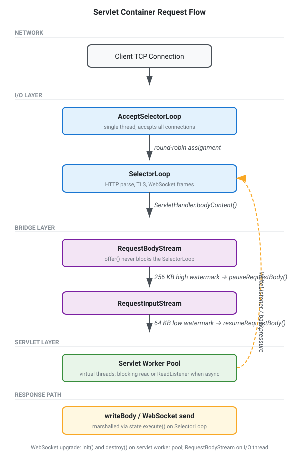
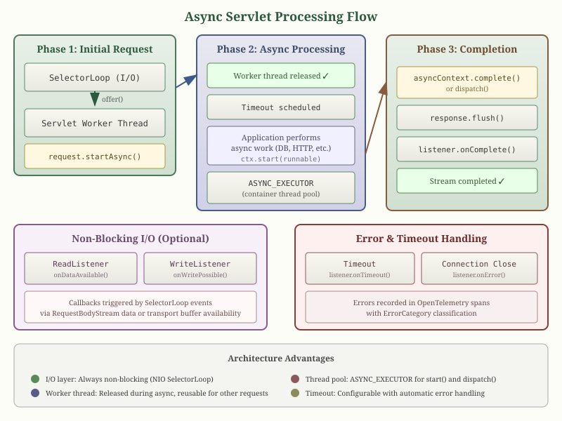

Gumdrop provides a complete Jakarta Servlet 6.1 container as part of its multiserver framework. This document describes the architecture, configuration, and features of the servlet container.
The servlet container was the original motivation for the Gumdrop project,
first released in early 2005 as a complete implementation of the Servlet
2.4 API. At that time, mainstream enterprise servlet
containers used blocking java.net.Socket implementations which
directly linked the number of incoming TCP connections to threads in the JVM.
This created a significant scalability bottleneck: a server with 1,000
concurrent connections required 1,000 threads, consuming memory and CPU
resources for context switching. Practically, simultaneous client connections
above this number were impossible.
Gumdrop was designed from the ground up to use non-blocking I/O via the then-new Java NIO Selector API. This architecture completely decouples the number of client connections from the number of servlet worker threads, which are drawn from a separate bounded virtual-thread pool of configurable size.
The servlet specification requires that servlets read request body data
from an InputStream, a blocking API that doesn't naturally
fit an event-driven architecture. Gumdrop bridges the two with a
RequestBodyStream per request:
ServletHandler calls offer() on the
RequestBodyStream. This never blocks the SelectorLoop; when
the buffered byte count reaches a high-water mark (256 KB), delivery
is paused via pauseRequestBody().RequestInputStream
park the virtual thread cheaply until data arrives; when the servlet drains
the buffer below the low-water mark (64 KB),
resumeRequestBody() runs on the SelectorLoop thread. Pool size
and queue capacity still bound concurrency; overload is shed with 503.ReadListener. Once registered, reads
never block: onDataAvailable() is dispatched when data arrives,
and read() throws if no data is ready.This design decouples connection count from carrier-thread use: a small I/O worker pool (defaulting to twice the number of processors) handles all network events, while servlet work runs on virtual threads whose pool size and queue are tuned separately.

Gumdrop provides complete Servlet 3.0+ asynchronous processing support, allowing servlets to perform long-running operations without blocking worker threads. This is particularly valuable for applications that need to wait for external resources (databases, remote APIs, message queues) while maintaining high throughput.
When a servlet calls request.startAsync(), Gumdrop:
service() method completes,
freeing it to handle other requests.
The AsyncContext provides methods for completing or
re-dispatching the request:
start(Runnable) - Executes the runnable on the servlet worker
pool, not on the calling thread.complete() - Flushes the response, notifies listeners, and
ends the request/response cycle.dispatch() - Dispatches the request URI again through the
container on a servlet worker pool thread, useful for completing processing
after an async operation.dispatch(path) - Forwards to a different servlet path for
completion.setTimeout(long) - Sets the timeout in milliseconds.
Servlet 3.1 introduced non-blocking I/O through the ReadListener
and WriteListener interfaces. Gumdrop implements these by
integrating with the underlying SelectorLoop event system:
onDataAvailable() callback is
triggered when RequestBodyStream receives data on the
SelectorLoop thread. Callbacks are marshalled onto the I/O thread via
dispatchContainerCallback(). The onAllDataRead()
callback fires when the request body is complete.onWritePossible() callback is
triggered when the response is writable again. Readiness reflects both the
local ResponseOutputStream buffer and transport backpressure
(pendingResponseBytes() on the connection). Flushed response
buffers are transferred to the transport without an extra copy; WebSocket
flush() hands off its buffer the same way. Chunks and
WebSocket outbound messages are sent via response.execute() on
the SelectorLoop thread.
// Example: Non-blocking read. startAsync() must be called first,
// otherwise setReadListener() throws IllegalStateException.
final AsyncContext asyncContext = req.startAsync();
final ServletInputStream input = req.getInputStream();
input.setReadListener(new ReadListener() {
public void onDataAvailable() throws IOException {
while (input.isReady() && !input.isFinished()) {
int b = input.read();
// process byte
}
}
public void onAllDataRead() throws IOException {
asyncContext.complete();
}
public void onError(Throwable t) {
// handle error
}
});
Errors during asynchronous processing are delivered to the registered
AsyncListeners:
onTimeout(). If none handles it, a 500 error response is sent
and the context is completed.start()
runnables, or from a failed dispatch(), are caught, logged, and
propagated to onError() listeners.

To enable async support for a servlet, set async-supported
in the deployment descriptor or use the @WebServlet annotation:
<servlet> <servlet-name>AsyncServlet</servlet-name> <servlet-class>com.example.AsyncServlet</servlet-class> <async-supported>true</async-supported> </servlet>
Or using annotations:
@WebServlet(urlPatterns = "/async", asyncSupported = true)
public class AsyncServlet extends HttpServlet {
protected void doGet(HttpServletRequest req, final HttpServletResponse resp) {
final AsyncContext ctx = req.startAsync();
ctx.start(new Runnable() {
public void run() {
try {
// Perform async work
resp.getWriter().println("Async response");
} catch (IOException e) {
throw new UncheckedIOException(e);
} finally {
ctx.complete();
}
}
});
}
}
Note that all filters in the filter chain must also have
async-supported=true for the servlet to use async processing.
Gumdrop implements the Jakarta Servlet 6.1 specification on top of its HTTP/1.1, HTTP/2, and HTTP/3 stack. Modern HTTP features work transparently with Gumdrop’s HTTP Server Handler API.
Beyond the Servlet 4.0 baseline (server push, trailer fields, HTTP upgrade), the container exposes current-spec request and session APIs:
getRequestId(), getProtocolRequestId(), and
getServletConnection() on every requestsendRedirect(location, statusCode, clearBody) for controlled
redirect responsesjakarta.servlet.error.method and
jakarta.servlet.error.query_stringjakarta.servlet.request.secure_protocol on TLS/QUIC requests
(from negotiated protocol, e.g. TLSv1.3)HttpSession.getAccessor() for session access outside an active
request (WebSocket handlers, async callbacks)read(ByteBuffer) / write(ByteBuffer) on servlet
streams
Server push allows the server to proactively send resources to the client
before they are explicitly requested. This is particularly effective for
pushing CSS, JavaScript, or images that the server knows the client will need.
PushBuilder remains supported but is deprecated since Servlet 6.0
because HTTP/2 server push is rarely used in modern deployments.
@WebServlet("/page")
public class PageServlet extends HttpServlet {
protected void doGet(HttpServletRequest req, HttpServletResponse resp)
throws ServletException, IOException {
// Push the stylesheet before sending the HTML
PushBuilder pushBuilder = req.newPushBuilder();
if (pushBuilder != null) {
pushBuilder.path("/css/styles.css").push();
pushBuilder.path("/js/app.js").push();
}
// Now send the HTML page
resp.setContentType("text/html");
resp.getWriter().println("<html>...");
}
}
newPushBuilder() always returns a builder. If the connection is
HTTP/1.x, or the client has disabled push through the HTTP/2
SETTINGS_ENABLE_PUSH setting, the push is silently dropped.
PushBuilder.method() accepts only GET and
HEAD and throws IllegalArgumentException otherwise.
HTTP trailers are headers sent after the message body. They are useful for sending metadata that is computed during body transmission, such as checksums or signatures. Gumdrop supports trailers for both HTTP/1.1 (chunked encoding) and HTTP/2. Trailers are sent only once the response body has started, and fields that are forbidden in trailers are silently dropped.
@WebServlet("/upload")
public class UploadServlet extends HttpServlet {
protected void doPost(HttpServletRequest req, HttpServletResponse resp)
throws ServletException, IOException {
final MessageDigest digest;
try {
digest = MessageDigest.getInstance("SHA-256");
} catch (NoSuchAlgorithmException e) {
throw new ServletException(e);
}
// Register a supplier that provides the trailers when the response completes
resp.setTrailerFields(new Supplier<Map<String, String>>() {
public Map<String, String> get() {
Map<String, String> trailers = new HashMap<>();
trailers.put("X-Content-SHA256", Base64.getEncoder()
.encodeToString(digest.digest()));
return trailers;
}
});
// Stream response while computing checksum
OutputStream out = resp.getOutputStream();
// ... write body, updating digest ...
// Trailers are sent automatically when response completes
}
}
Request trailers can be accessed after the request body has been fully read:
if (req.isTrailerFieldsReady()) {
Map<String, String> trailers = req.getTrailerFields();
String checksum = trailers.get("x-content-checksum");
}
Servlets can upgrade HTTP connections to WebSocket using the standard
HttpUpgradeHandler API. Incoming WebSocket messages are
delivered through the same non-blocking RequestBodyStream
bridge as HTTP request bodies, with the same pause/resume backpressure.
HttpUpgradeHandler.init() is dispatched to the servlet worker
pool so handler setup never blocks the SelectorLoop. The same pool runs
destroy() when the WebSocket closes, after init()
has started (so a handler may use destroy() to unblock an
init() read loop). Outbound data written
to the WebConnection output stream is marshalled onto the I/O
thread via response.execute(), with write backpressure matching
the HTTP response path.
@WebServlet("/websocket")
public class WebSocketServlet extends HttpServlet {
protected void doGet(HttpServletRequest req, HttpServletResponse resp)
throws ServletException, IOException {
// Check for WebSocket upgrade request
if ("websocket".equalsIgnoreCase(req.getHeader("Upgrade"))) {
req.upgrade(MyWebSocketHandler.class);
} else {
resp.sendError(HttpServletResponse.SC_BAD_REQUEST);
}
}
}
public class MyWebSocketHandler implements HttpUpgradeHandler {
private WebConnection connection;
@Override
public void init(WebConnection wc) {
this.connection = wc;
// Runs on a servlet worker thread: read/write loop here until close
}
@Override
public void destroy() {
// Close the WebConnection to unblock any read in init()
}
}
For most WebSocket applications, consider using Gumdrop’s native WebSocket API directly, which provides a simpler event-driven model. The Servlet upgrade API is primarily useful for applications that need to maintain Servlet API compatibility.
The HttpServletMapping interface provides information about
how the current request was mapped to a servlet:
HttpServletMapping mapping = req.getHttpServletMapping(); String matchValue = mapping.getMatchValue(); // matched part of URL String pattern = mapping.getPattern(); // URL pattern used String servletName = mapping.getServletName(); // servlet name MappingMatch matchType = mapping.getMappingMatch(); // EXACT, PATH, EXTENSION, DEFAULT
This is particularly useful for servlets mapped with wildcards that need to determine which specific resource was requested.
The servlet container is a ServletRequestHandler
(an HttpStreamHandler) wired onto a plain
HttpServer. A
Container owns its worker pool, realms, and web application
Contexts; the handler is created once per container and
installed on however many listeners the deployment needs:
Container container = new Container();
container.addContext(new Context(container, "", new File("web")));
HttpServer server = HttpServer.compose()
.listener(new Http2Listener().port(8080))
.listener(new Http3Listener().port(8443)
.tls(TlsConfig.pem(Path.of("cert.pem"), Path.of("key.pem"))))
.streamHandler(new ServletRequestHandler(container))
.server();
server.start();
Because the servlet container sits on a plain HttpServer, it
inherits Gumdrop’s full transport and protocol independence layer.
Serving applications over HTTP/3 (QUIC),
HTTP/2, and HTTP/1.1 is a matter of adding
the appropriate listeners, as above - no reverse proxy is required to
terminate QUIC, unlike mainstream servlet containers such as Apache Tomcat,
GlassFish, and Undertow. Servlets, filters, and JSP pages operate
identically regardless of the underlying HTTP version, benefiting from
HTTP/3’s reduced latency and elimination of head-of-line blocking
without any code changes. The container also benefits from HTTP/2 features
including HPACK header compression, stream multiplexing, flow control, and
server push, as well as chunked encoding, HTTPS, and
OpenTelemetry integration. See the
HTTP documentation for details on the underlying
HTTP implementation.
Container is configured by composition: each method is named for
the setting and returns the container, so calls chain. It covers the servlet
worker pool, clustering, and operational settings:
hotDeploy(boolean) - enable automatic redeployment when files
change (default: false, unless the GUMDROP_HOT_DEPLOY
environment variable is true)clusterPort(int) - UDP port for session replication multicastclusterGroupAddress(InetAddress) - multicast group for clustering, as an
address literal. When it is not set the cluster joins 224.0.80.80 and, where an
interface has an IPv6 address, ff12::8080, and sends every message to each group
it joined. An explicit group replaces bothclusterKey(byte[]) - shared secret key for cluster encryption
(32 bytes, 256 bits)replicationAllowedClasses(Set<String>) - fully qualified
class names permitted in Java-serialised replicated session attributes, in
addition to the built-in JDK allowlist (webapp class loaders are never
blanket-allowed)addRealm(String, Realm) / realms(Map) - named realms available to contextsbufferSize(int) - I/O buffer size for request/response streams in bytes
(default: 8192, minimum: 1024)workerCorePoolSize(int) - minimum servlet worker pool size (virtual threads)workerMaximumPoolSize(int) - maximum servlet worker pool size (virtual threads)workerKeepAlive(Duration) - idle timeout for excess pool workersThe servlet worker pool is distinct from the I/O worker loops, allowing independent tuning based on workload characteristics.
HTTP access logs (CLF or ELFF) are configured on the runtime’s
TelemetryConfig by adding an
AccessLogExporter to its exporter tree, not on
Container. Lines are written when each HTTP response completes;
servlet identity is recorded separately from protocol-layer authentication
when both are present, and the AccessLogUserSelection chosen for
the exporter says which appears.
Add web applications as Context instances on the container:
Container container = new Container();
container.addContext(new Context(container, "", new File("web")));
Context app = new Context(container, "/app", new File("myapp.war"));
app.distributable(true);
container.addContext(app);
contextPath - the context path (empty string for root)root - path to the web application directory or WAR filedistributable - enable session replication (default: false)
Realms provide authentication and authorisation for protected resources.
Add realms to the container and reference them by name in web
application login-config elements:
BasicRealm realm = new BasicRealm();
realm.href("myRealm.xml");
Container container = new Container();
container.addRealm("myRealm", realm);
container.addContext(new Context(container, "", new File("web")));
The BasicRealm reads users, passwords, and roles from an XML file.
Custom realm implementations can integrate with LDAP, databases, or other
authentication backends.
Embedding the container in Java, as above, is the full-featured way to
configure it. For deployments in the style of Tomcat, where you download a
distribution and run a script without writing or compiling code, the stock
launcher (bin/gumdrop.sh, via ContainerMain) reads a
minimal conf/server.xml and converts it into the same composition
wiring: a Container with its realms, contexts and cluster
settings, installed as the ServletRequestHandler of an
HttpServer. It deliberately covers only the container, its
contexts, and HTTP listeners including TLS; it is not a general configuration
system, and every other protocol, or a more elaborate servlet deployment, is
composed in Java. The file location can be given on the command line or in
GUMDROP_CONFIG (see
docs/CONTAINER-DEPLOYMENT.md in the source tree).
<server>
<realm name="myRealm,Gumdrop Manager" class="org.bluezoo.gumdrop.auth.BasicRealm"
href="realm-servlet.xml"/>
<container hot-deploy="true" buffer-size="8192"
worker-core-pool-size="8" worker-maximum-pool-size="64"
worker-keep-alive="60"/>
<cluster port="4001" group-address="224.0.80.80" key="64-hex-characters"/>
<context path="" root="../webapps/ROOT" distributable="true"/>
<context path="/manager" root="../webapps/manager.war"/>
<listener port="8080"/>
<listener port="8443" secure="true" cert-file="tls/cert.pem"
key-file="tls/key.pem" bind-wildcard="true"
client-auth="required" ca-file="tls/ca.pem"/>
</server>
realm - name (a comma-separated list of aliases for
one realm, since a web application's realm-name is a
per-application label), class (a Realm with a public
no-argument constructor), and, for BasicRealm, href
(the users file).container (optional, as are all its attributes) -
hot-deploy, buffer-size (bytes),
worker-core-pool-size, worker-maximum-pool-size, and
worker-keep-alive (seconds). These correspond to the
Container methods described above.cluster - port and key (exactly 64
hexadecimal characters, the 32-byte AES-256 key) are required;
group-address is an optional multicast address literal.context - path (empty for the root) and
root (a directory or WAR file) are required;
distributable enables session replication.listener - port is required;
bind-wildcard binds all addresses. A secure listener
takes its TLS identity from PEM files (cert-file and
key-file) or from a Java keystore (keystore-file,
keystore-pass, and optionally keystore-format of
PKCS12, JKS or JCEKS), not both. PEM
files are the preferred form; keystores are supported for the standard Java
ecosystem. Further optional TLS attributes:
tls-version - NEGOTIATE (the default),
TLS_1_2 or TLS_1_3, for the TCP listener (HTTP/3 is
always TLS 1.3).cipher-suites and named-groups - colon-separated
lists, applied to both the TCP and HTTP/3 listeners. See
TLS & DTLS.client-auth - none (the default) or
required for mutual TLS. Under required, client
certificates are verified against a PEM CA bundle (ca-file) or a
Java truststore (truststore-file, truststore-pass,
and optionally truststore-format), not both; with neither, the JVM
default trust store is used. These attributes are rejected without
client-auth="required".sni-default-alias and nested
<sni host="example.com" alias="example-cert"/> elements -
serve several certificates from one port by Server Name Indication. Each
sni maps a host name (exact, or a wildcard such as
*.example.org) to a keystore alias, and the default alias is used
when no host matches. SNI selects keystore aliases, so it needs
keystore-file and is not available with a single PEM identity.ech-config-list-file, ech-private-key-file and
ech-required for Encrypted Client Hello.
Relative href, root, cert-file,
key-file, keystore-file, ca-file,
truststore-file and ECH paths resolve against the
directory containing server.xml, not the working directory.
Unrecognised elements are rejected, and the file is read with external
entities disabled.
Web applications marked as distributable participate in
session replication across cluster nodes. When a session attribute is
modified, the change is broadcast to other nodes via UDP multicast,
allowing any node to service requests for that session.
Gumdrop uses a UDP multicast protocol to replicate session data:
setAttribute is called on a distributed session, the
container serialises the session attribute and broadcasts it to the cluster
multicast group.Session replication uses AES-256-GCM encryption with a shared secret key. All cluster traffic is authenticated and encrypted. The protocol includes:
Container.replicationAllowedClasses().
Webapp classes are not allowed unless listed explicitly.
Multicast traffic respects network boundaries but relies on proper network
segmentation. Cluster nodes should be deployed on an isolated network
segment or VLAN. The shared secret key must be distributed securely to all
nodes and configured identically with Container.clusterKey().
The cluster node will publish telemetry metrics if telemetry is enabled.
When hot deployment is enabled (see
Container.hotDeploy()), the servlet container monitors web
applications for changes and automatically redeploys them when modifications
are detected. This
enables rapid development cycles without manual server restarts.
Gumdrop uses the Java NIO WatchService API (introduced in Java 7)
to monitor the filesystem for changes. This provides efficient, event-based
notification rather than polling:
WEB-INF directory
and all its subdirectories are registered with the watch service. Changes
to deployment descriptors, class files, JAR libraries, or configuration
files trigger redeployment.When a change is detected:
The session manager is retained across a reload, so unexpired sessions are generally kept, but attributes whose classes came from the old classloader may no longer be compatible.
Gumdrop supports the standard web.xml deployment descriptor
format through Jakarta Servlet 6.1 (version="6.1" with the
https://jakarta.ee/xml/ns/jakartaee namespace, or earlier
javaee schemas for backward compatibility), including:
servlet and servlet-mapping - servlet definitions
and URL mappingsfilter and filter-mapping - filter chain configurationlistener - lifecycle and event listenerscontext-param - context-wide initialisation parameterswelcome-file-list - default files for directory requestserror-page - error handling configurationmime-mapping - content type associationsThe following context parameters control Gumdrop container behaviour:
org.bluezoo.gumdrop.show-stack-traces – When the default
error page is used (no custom error-page configured), controls
whether full stack traces are included in the response. Values: true
or false (default). When false, stack traces are
omitted for security; the full trace is always logged server-side. Enable
true only for development.
<context-param> <param-name>org.bluezoo.gumdrop.show-stack-traces</param-name> <param-value>false</param-value> </context-param>
security-constraint - declarative security with URL patternslogin-config - authentication method (BASIC, FORM, CLIENT-CERT)security-role - role definitionsjsp-config - JSP property groups and taglib declarationssession-config - session timeout and tracking modesmultipart-config - file upload configurationasync-supported - asynchronous processing enablementGumdrop supports annotation-driven configuration as specified in Servlet 3.0+:
@WebServlet - servlet declaration and mapping@WebFilter - filter declaration and mapping@WebListener - listener declaration@MultipartConfig - multipart request handling@ServletSecurity - declarative security constraints
Annotations are processed during context initialisation by scanning classes
in WEB-INF/classes and JAR files in WEB-INF/lib.
Library JAR files may include META-INF/web-fragment.xml to
contribute servlets, filters, and listeners. Fragments are merged with
the main deployment descriptor according to ordering rules.
Gumdrop supports Java Naming and Directory Interface (JNDI) resources that can be configured externally and looked up by web applications at runtime. This allows configuration data, database connections, mail sessions, and messaging resources to be managed by the container rather than hardcoded in application code.
Resources are composed in Java (container.addResource(...)) and
bound to the container's JNDI naming tree. Web applications reference these
resources in their deployment descriptors using resource-ref,
resource-env-ref, or through annotation-based injection.
DataSourceDef defines a JDBC DataSource with built-in
connection pooling. Gumdrop manages a pool of database connections that
are reused across requests, reducing connection overhead.
DataSourceDef ds = new DataSourceDef();
ds.setName("jdbc/myDB");
ds.setClassName("org.postgresql.Driver");
ds.setServerName("localhost");
ds.setPortNumber(5432);
ds.setDatabaseName("myapp");
ds.setUser("dbuser");
ds.setPassword("dbpass");
ds.setInitialPoolSize(5);
ds.setMinPoolSize(5);
ds.setMaxPoolSize(20);
ds.setMaxIdleTime(300);
container.addResource(ds);
DataSource setters:
setName - JNDI name (e.g., jdbc/myDB)setClassName - JDBC driver classsetServerName - database server hostnamesetPortNumber - database server portsetDatabaseName - name of the databasesetUrl - full JDBC URL (alternative to server/port/database)setUser - database usernamesetPassword - database passwordsetInitialPoolSize - connections created at startupsetMinPoolSize - minimum connections maintained in poolsetMaxPoolSize - maximum connections allowedsetMaxIdleTime - seconds before idle connections are closedsetIsolationLevel - default transaction isolation levelGumdrop recognises common JDBC driver classes and automatically constructs the connection URL from the server, port, and database properties. Supported drivers include PostgreSQL, MySQL/MariaDB, Oracle, SQL Server, DB2, Derby, SQLite, and H2.
Reference in deployment descriptor:
<resource-ref> <res-ref-name>jdbc/myDB</res-ref-name> <res-type>javax.sql.DataSource</res-type> <res-auth>Container</res-auth> </resource-ref>
Usage in servlet code:
javax.naming.Context ctx = new InitialContext();
DataSource ds = (DataSource) ctx.lookup("java:comp/env/jdbc/myDB");
Connection conn = ds.getConnection();
try {
// Use connection
} finally {
conn.close(); // Returns to pool
}
MailSession defines a JavaMail Session for sending
and receiving email. The session is pre-configured with server details and
authentication credentials.
MailSession mail = new MailSession();
mail.setName("mail/smtp");
mail.setHost("smtp.example.com");
mail.setUser("mailuser");
mail.setPassword("mailpass");
mail.setFrom("noreply@example.com");
mail.setTransportProtocol("smtp");
mail.setStoreProtocol("imap");
mail.addProperty("mail.smtp.port", "587");
mail.addProperty("mail.smtp.starttls.enable", "true");
container.addResource(mail);
Mail session setters:
setName - JNDI name (e.g., mail/smtp)setHost - mail server hostnamesetUser - authentication usernamesetPassword - authentication passwordsetFrom - default sender addresssetTransportProtocol - outgoing protocol (default: smtp)setTransportProtocolClass - custom transport provider classsetStoreProtocol - incoming protocol (default: imap)setStoreProtocolClass - custom store provider class
Additional JavaMail properties can be specified with
addProperty(name, value). Common properties include STARTTLS
enablement, port numbers, and SSL configuration.
Usage in servlet code:
javax.naming.Context ctx = new InitialContext();
Session session = (Session) ctx.lookup("java:comp/env/mail/smtp");
MimeMessage msg = new MimeMessage(session);
msg.setRecipients(Message.RecipientType.TO, "user@example.com");
msg.setSubject("Hello");
msg.setText("Message body");
Transport.send(msg);
JmsConnectionFactory defines a JMS ConnectionFactory
for messaging. This requires a JMS provider implementation in the classpath.
JmsConnectionFactory jmsFactory = new JmsConnectionFactory();
jmsFactory.setName("jms/ConnectionFactory");
jmsFactory.setClassName("org.apache.activemq.ActiveMQConnectionFactory");
jmsFactory.setUser("jmsuser");
jmsFactory.setPassword("jmspass");
jmsFactory.setClientId("gumdrop-client");
jmsFactory.addProperty("brokerURL", "tcp://localhost:61616");
container.addResource(jmsFactory);
JMS connection factory setters:
setName - JNDI namesetClassName - JMS provider factory classsetInterfaceName - factory interface (default: javax.jms.ConnectionFactory)setUser - authentication usernamesetPassword - authentication passwordsetClientId - JMS client identifier for durable subscriptions
JmsDestination defines a JMS queue or topic.
JmsDestination orderQueue = new JmsDestination();
orderQueue.setName("queue/OrderQueue");
orderQueue.setClassName("org.apache.activemq.command.ActiveMQQueue");
orderQueue.addProperty("physicalName", "OrderQueue");
container.addResource(orderQueue);
JmsDestination notifications = new JmsDestination();
notifications.setName("topic/Notifications");
notifications.setClassName("org.apache.activemq.command.ActiveMQTopic");
notifications.addProperty("physicalName", "Notifications");
container.addResource(notifications);
The interface type (javax.jms.Queue or javax.jms.Topic)
is inferred when the JNDI name begins with queue/ or
topic/ (after any java:comp/env/); otherwise call
setInterfaceName() explicitly. Instantiation fails with an
IllegalStateException if the interface cannot be determined.
Environment entries (env-entry) provide simple configuration
values to web applications. These are defined in the deployment descriptor,
not composed in Java like other resources.
<env-entry> <env-entry-name>maxItemsPerPage</env-entry-name> <env-entry-type>java.lang.Integer</env-entry-type> <env-entry-value>25</env-entry-value> </env-entry> <env-entry> <env-entry-name>adminEmail</env-entry-name> <env-entry-type>java.lang.String</env-entry-type> <env-entry-value>admin@example.com</env-entry-value> </env-entry>
Supported types include java.lang.String, java.lang.Integer,
java.lang.Long, java.lang.Short, java.lang.Byte,
java.lang.Double, java.lang.Float,
java.lang.Boolean, and java.lang.Character.
AdministeredObject defines arbitrary managed objects for Java
Connector Architecture (JCA) integration. These are instantiated by Gumdrop
and bound to JNDI with properties set via JavaBean conventions.
AdministeredObject configBean = new AdministeredObject();
configBean.setJndiName("custom/MyConfig");
configBean.setAdministeredObjectClass("com.example.ConfigBean");
configBean.setAdministeredObjectInterface("com.example.Config");
configBean.addProperty("serverUrl", "https://api.example.com");
configBean.addProperty("timeout", "30000");
configBean.addProperty("enableCache", "true");
container.addResource(configBean);
Servlet 3.0+ supports annotation-based resource injection. Annotate fields
or setter methods with @Resource and Gumdrop will inject the
resource automatically:
@WebServlet("/orders")
public class OrderServlet extends HttpServlet {
@Resource(name = "jdbc/myDB")
private DataSource dataSource;
@Resource(name = "mail/smtp")
private Session mailSession;
@Resource(name = "maxItemsPerPage")
private int pageSize;
protected void doGet(HttpServletRequest req, HttpServletResponse resp) {
Connection conn = dataSource.getConnection();
// ...
}
}
For injection to work, the resource must either be composed in Java and
added via container.addResource(...) (for DataSources, mail
sessions, etc.) or defined in the deployment descriptor (for environment
entries).
Gumdrop’s servlet container can host JAX-WS SOAP and JAX-RS REST web
services without any container modifications or additional J2EE dependencies.
Both are deployed as standard servlets: add an implementation to your web
application’s WEB-INF/lib, configure the servlet in
web.xml, and Gumdrop dispatches requests to it like any other
servlet.
Gumdrop does not bundle JAX-WS or JAX-RS implementations. Applications that need web services include Metro, CXF, Jersey, or RESTEasy in their WAR; this keeps the container lean and lets you choose the implementation and version.
Add Metro JARs to WEB-INF/lib (e.g. jaxws-rt and its
transitive dependencies from Maven Central). Configure the servlet and context
listener in web.xml:
<servlet> <servlet-name>MyService</servlet-name> <servlet-class>com.sun.xml.ws.transport.http.servlet.WSServlet</servlet-class> </servlet> <servlet-mapping> <servlet-name>MyService</servlet-name> <url-pattern>/services/*</url-pattern> </servlet-mapping> <listener> <listener-class>com.sun.xml.ws.transport.http.servlet.WSServletContextListener</listener-class> </listener>
Define endpoints in WEB-INF/sun-jaxws.xml. Metro generates WSDL
dynamically at runtime.
Add CXF JARs to WEB-INF/lib. Configure the CXF servlet:
<servlet> <servlet-name>CXFServlet</servlet-name> <servlet-class>org.apache.cxf.transport.servlet.CXFServlet</servlet-class> </servlet> <servlet-mapping> <servlet-name>CXFServlet</servlet-name> <url-pattern>/services/*</url-pattern> </servlet-mapping>
Configure endpoints via CXF’s cxf.xml or Spring configuration
in WEB-INF/cxf-beans.xml, or use CXF’s programmatic API.
Add Jersey JARs to WEB-INF/lib (e.g. jersey-container-servlet
and its dependencies from Maven Central). Configure the servlet:
<servlet>
<servlet-name>JerseyServlet</servlet-name>
<servlet-class>org.glassfish.jersey.servlet.ServletContainer</servlet-class>
<init-param>
<param-name>jakarta.ws.rs.Application</param-name>
<param-value>com.example.MyApplication</param-value>
</init-param>
</servlet>
<servlet-mapping>
<servlet-name>JerseyServlet</servlet-name>
<url-pattern>/api/*</url-pattern>
</servlet-mapping>
Alternatively, use jersey.config.server.provider.packages to
scan a package for @Path resource classes.
Add RESTEasy JARs to WEB-INF/lib. Configure the servlet:
<servlet> <servlet-name>ResteasyServlet</servlet-name> <servlet-class>org.jboss.resteasy.plugins.server.servlet.HttpServletDispatcher</servlet-class> </servlet> <servlet-mapping> <servlet-name>ResteasyServlet</servlet-name> <url-pattern>/api/*</url-pattern> </servlet-mapping>
RESTEasy discovers resources via @ApplicationPath or
resteasy.servlet.mapping.prefix, or configure an
Application subclass.
CXF also implements JAX-RS. Use the same CXFServlet as for JAX-WS;
configure JAX-RS endpoints in cxf.xml or cxf-beans.xml.
CXF can serve both SOAP and REST from the same application.
@WebServiceRef injection, the JAX-WS
implementation in the application must provide the Service instance; Gumdrop
parses service-ref metadata but does not instantiate JAX-WS
clients.
Gumdrop includes a JSP implementation (the jakarta.servlet.jsp
API, at JSP 2.3 level) providing server-side template rendering for web
applications. It supports scripting elements, directives, standard actions,
expression language, and custom tag libraries.
JSP pages are compiled to Java servlets on first access and cached for subsequent requests. Gumdrop uses an in-memory compilation architecture that eliminates temporary file I/O:
.jsp files with <% %> syntax)
or the XML parser (for .jspx files with pure XML syntax).
The result is an abstract syntax tree of JSP elements.javax.tools.JavaCompiler API.
No temporary .java files are written to disk.This approach improves performance and security by avoiding filesystem writes, and simplifies deployment since no writable temporary directory is required.
Gumdrop tracks the relationships between JSP files and their includes, and detects stale pages by file modification time:
<%@ include file="..." %>
are tracked as compile-time dependencies.
Changes to tag library descriptors are not tracked. A WatchService-based
JspHotReloader class exists but is not currently started by the
container.
Gumdrop implements a subset of the Expression Language (EL 2.x style, with
the #{} deferred syntax parsed) for accessing application data
within JSP pages. The expression evaluator supports:
pageContext, pageScope,
requestScope, sessionScope, applicationScope,
param, paramValues, header,
headerValues, cookie, initParam${user.name}),
map entries (${map['key']}), list/array elements (${list[0]})+ - * / div % mod), comparison
(== != < > <= >= eq ne lt gt le ge), logical
(&& || ! and or not), empty, ternary (? :)${bean.method(arg)}, on the
bean's own declared type
Parsing an expression string into its operator structure -- as opposed to
evaluating it against the current page/request state, which must run fresh
every time -- is cached: a given expression string is scanned for operator
positions and literal/property structure only once, in a bounded, shared
cache, and reused on every subsequent evaluation of that same string. This
matters most inside iteration tags such as <c:forEach>,
where the same expression (e.g. ${item.name}) would otherwise
be re-parsed from scratch on every row of every request.
Custom tag libraries extend JSP functionality through reusable components. Gumdrop supports:
Tag, IterationTag,
or BodyTag interfacesSimpleTagSupportWEB-INF/lib and its TLDs are discovered from META-INF
Tag libraries are discovered from TLD files in WEB-INF,
WEB-INF/lib/*.jar!/META-INF, and via <taglib>
declarations in the deployment descriptor.
The jsp-config element in web.xml controls JSP
processing for groups of pages:
<jsp-config>
<taglib>
<taglib-uri>http://example.com/tags</taglib-uri>
<taglib-location>/WEB-INF/tlds/example.tld</taglib-location>
</taglib>
<jsp-property-group>
<url-pattern>*.jsp</url-pattern>
<page-encoding>UTF-8</page-encoding>
<scripting-invalid>false</scripting-invalid>
<el-ignored>false</el-ignored>
<is-xml>false</is-xml>
<include-prelude>/WEB-INF/jspf/header.jspf</include-prelude>
<include-coda>/WEB-INF/jspf/footer.jspf</include-coda>
<trim-directive-whitespaces>true</trim-directive-whitespaces>
<default-content-type>text/html; charset=UTF-8</default-content-type>
<buffer>16kb</buffer>
</jsp-property-group>
</jsp-config>
Property group options:
url-pattern - URL patterns this group applies topage-encoding - character encoding for JSP sourcescripting-invalid - disable scriptlets, expressions, declarationsel-ignored - treat EL expressions as literal text
(parsed but not yet applied)is-xml - parse JSP as XML document (JSPX)include-prelude - files to include at start of each page
(parsed but not yet applied)include-coda - files to include at end of each page
(parsed but not yet applied)trim-directive-whitespaces - remove whitespace around directives
(parsed but not yet applied)default-content-type - default response content typebuffer - output buffer size
For production deployments, JSP pages can be precompiled at build time
using the JspPrecompiler utility:
java org.bluezoo.gumdrop.servlet.jsp.JspPrecompiler \
-webapp /path/to/webapp \
-output /path/to/classes \
-package org.example.jsp \
-threads 4 \
-verbose
Precompilation benefits include faster startup time (no compilation on first request), early detection of JSP syntax errors, and reduced runtime memory usage (no compiler in memory). The precompiler supports parallel compilation for large applications.
When JSP compilation fails, Gumdrop maps Java compilation errors back to the original JSP source locations. Error messages include the JSP filename and line number, making it easy to locate and fix problems.
For practical examples demonstrating JSP features including scriptlets, expressions, directives, JSTL usage, custom tags, and EL expressions, see the JSP Examples page.
← Back to Main Page | HTTP Server & Client | WebSocket Service & Client | SMTP Server & Client | IMAP Server | POP3 Server | Telemetry
Gumdrop Servlet Container